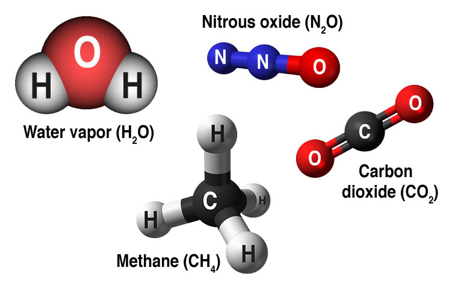

Most climate scientists agree the main cause of the current global warming trend is human expansion of the "greenhouse effect" — warming that results when the atmosphere traps heat radiating from Earth toward space. Certain gases in the atmosphere block heat from escaping. Long-lived gases that remain semi-permanently in the atmosphere and do not respond physically or chemically to changes in temperature are described as "forcing" climate change. Gases, such as water vapor, which respond physically or chemically to changes in temperature are seen as "feedbacks." Gases that contribute to the greenhouse effect include:
Water vapor. The most abundant greenhouse gas, but importantly, it acts as a feedback to the climate. Water vapor increases as the Earth's atmosphere warms, but so does the possibility of clouds and precipitation, making these some of the most important feedback mechanisms to the greenhouse effect.
Carbon dioxide (CO2). A minor but very important component of the atmosphere, carbon dioxide is released through natural processes such as respiration and volcano eruptions and through human activities such as deforestation, land use changes, and burning fossil fuels. Humans have increased atmospheric CO2 concentration by more than a third since the Industrial Revolution began. This is the most important long-lived "forcing" of climate change.
Methane. A hydrocarbon gas produced both through natural sources and human activities, including the decomposition of wastes in landfills, agriculture, and especially rice cultivation, as well as ruminant digestion and manure management associated with domestic livestock. On a molecule-for-molecule basis, methane is a far more active greenhouse gas than carbon dioxide, but also one which is much less abundant in the atmosphere.
Nitrous oxide. A powerful greenhouse gas produced by soil cultivation practices, especially the use of commercial and organic fertilizers, fossil fuel combustion, nitric acid production, and biomass burning.
Chlorofluorocarbons (CFCs). Synthetic compounds entirely of industrial origin used in a number of applications, but now largely regulated in production and release to the atmosphere by international agreement for their ability to contribute to destruction of the ozone layer. They are also greenhouse gases.
On Earth, human activities are changing the natural greenhouse. Over the last century the burning of fossil fuels like coal and oil has increased the concentration of atmospheric carbon dioxide (CO2). This happens because the coal or oil burning process combines carbon with oxygen in the air to make CO2. To a lesser extent, the clearing of land for agriculture, industry, and other human activities has increased concentrations of greenhouse gases.
The consequences of changing the natural atmospheric greenhouse are difficult to predict, but certain effects seem likely:
On average, Earth will become warmer. Some regions may welcome warmer temperatures, but others may not.
Warmer conditions will probably lead to more evaporation and precipitation overall, but individual regions will vary, some becoming wetter and others dryer.
A stronger greenhouse effect will warm the oceans and partially melt glaciers and other ice, increasing sea level. Ocean water also will expand if it warms, contributing further to sea level rise.
Meanwhile, some crops and other plants may respond favorably to increased atmospheric CO2, growing more vigorously and using water more efficiently. At the same time, higher temperatures and shifting climate patterns may change the areas where crops grow best and affect the makeup of natural plant communities.
In its Fifth Assessment Report, the Intergovernmental Panel on Climate Change, a group of 1,300 independent scientific experts from countries all over the world under the auspices of the United Nations, concluded there's a more than 95 percent probability that human activities over the past 50 years have warmed our planet. sThe industrial activities that our modern civilization depends upon have raised atmospheric carbon dioxide levels from 280 parts per million to 400 parts per million in the last 150 years. The panel also concluded there's a better than 95 percent probability that human-produced greenhouse gases such as carbon dioxide, methane and nitrous oxide have caused much of the observed increase in Earth's temperatures over the past 50 years.
It's reasonable to assume that changes in the sun's energy output would cause the climate to change, since the sun is the fundamental source of energy that drives our climate system. Indeed, studies show that solar variability has played a role in past climate changes. For example, a decrease in solar activity is thought to have triggered the Little Ice Age between approximately 1650 and 1850, when Greenland was largely cut off by ice from 1410 to the 1720s and glaciers advanced in the Alps. But several lines of evidence show that current global warming cannot be explained by changes in energy from the sun:
Since 1750, the average amount of energy coming from the sun either remained constant or increased slightly
If the warming were caused by a more active sun, then scientists would expect to see warmer temperatures in all layers of the atmosphere. Instead, they have observed a cooling in the upper atmosphere, and a warming at the surface and in the lower parts of the atmosphere. That's because greenhouse gases are trapping heat in the lower atmosphere.
Climate models that include solar irradiance changes can’t reproduce the observed temperature trend over the past century or more without including a rise in greenhouse gases.